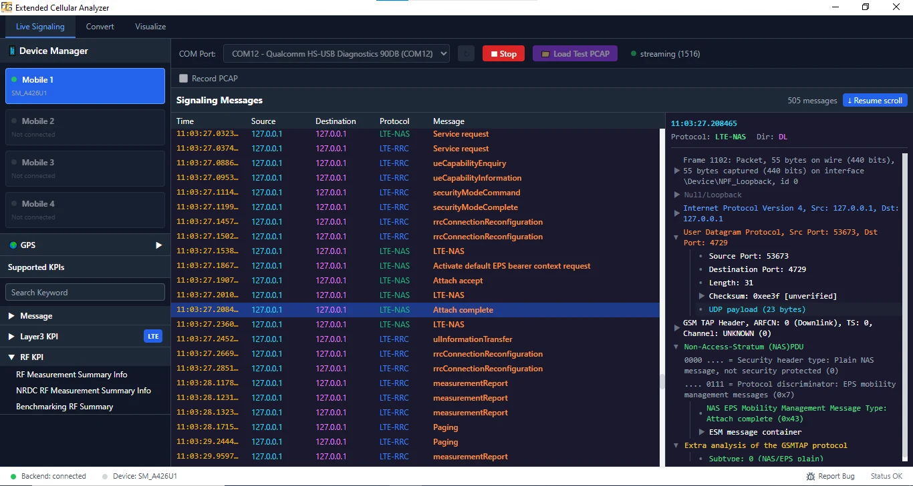

01 / Protocol
Desktop application
Extended Cellular Analyzer (ECA)
Team lead · F2G Solutions
Monitor cellular RF measurements, decode UE baseband log captures, and review signaling and drive-test sessions across LTE, NR, WCDMA, and GSM.
ImpactUsed in Nokia drive-test engagements across the Middle East and Africa, particularly Ethiopia.
- Python
- TShark
- ADB / DIAG
- SQLite
Project details
Role
I led this project within my team. Development started in October 2025 and continued in 2026.
Project scope
Live device capture and offline PCAP analysis, GPS mapping, protocol inspection, and CSV/Excel exports.
Scope & limitations
The public overview describes Windows support and one connected device at a time; simultaneous multi-device capture is planned.
